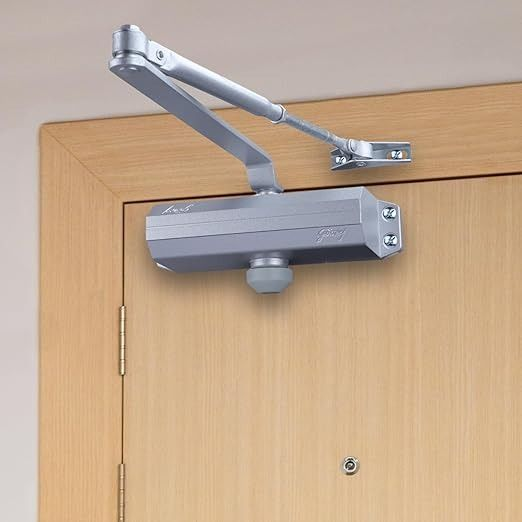

Wardrobe Designs MechanismsSeptember 18, 2026 • 6 Min Read
Concealed Coplanar Tracks vs Traditional Hinges
A comprehensive engineering comparison of flush coplanar sliding doors, German Hettich TopLine running gear, and 165° Blum soft-close swing hinges for modern master bedrooms.
Flush Alignment
Zero Floor Track
Henrik Vance
Read Guide